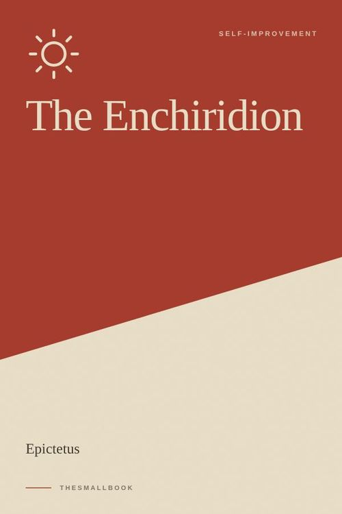

Books by Epictetus
Epictetus has one book in the library. Every book here is read down to the big idea, the lessons, the lines worth keeping and the actions worth taking. Start with the summary, then buy the full book if it earns a place on your shelf.

The Enchiridion
125 · 7 min · 9 lessons
Some things are up to you; most are not. The whole of Stoicism is living in that first category.
A slave who became one of history's great teachers, Epictetus compressed Stoicism into a pocket manual. His core division: the world splits into things under our control (judgements, desires, actions) and things not (body, wealth, reputation, outcomes). All disturbance comes from caring about the second list. The Enchiridion is the practical application: desire less, judge carefully, and meet every event as a philosopher, not a victim.
Lessons in the summary
- The Control Test
- It Is the Judgement, Not the Event
- Appearances: Pause Before You Judge
- Play Your Role Well, Not Loudly
- The Long View: Everything Is Lent
- The Discipline of Assent: Impressions Come First
- The Role, The Play, The Exit
- The Examined Day: The Evening Ledger
- The Reminder: Everything Is on Loan
Lines worth keeping
- Some things are in our control and others are not.
- It is not things that disturb us, but our judgements about things.
- Seek not that the things which happen should happen as you wish; but wish the things which happen to be as they are, and you will have a tranquil flow of life.
Questions Epictetus helps answer
Read nearby authors next
- Amish Tripathi 6 books
- Robin Sharma 5 books
- A.P.J. Abdul Kalam 4 books
- Adam Grant 4 books
- Cal Newport 4 books
- Chetan Bhagat 4 books
- Jonathan Haidt 3 books
- Ryan Holiday 3 books
Questions Epictetus helps answer
Where should I start with Epictetus? Start with The Enchiridion: Some things are up to you; most are not. The whole of Stoicism is living in that first category.